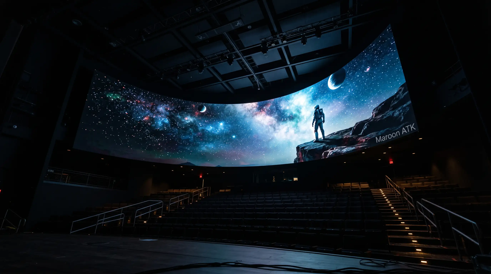
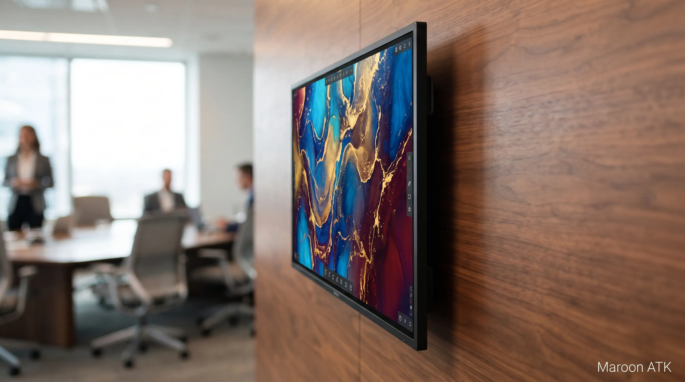

Pendahuluan: Revolusi Ruang Rapat dengan Interactive Flat Panel
Di era digital dan hybrid working saat ini, ruang rapat modern dituntut untuk mendukung kolaborasi tim yang efektif, presentasi yang menarik, dan komunikasi yang jelas—baik secara tatap muka maupun jarak jauh. Interactive Flat Panel (IFP) hadir sebagai solusi teknologi yang menggabungkan fungsi papan tulis, proyektor, dan sistem video conference dalam satu perangkat canggih.
Di Indonesia, semakin banyak perusahaan dan instansi pemerintah yang beralih dari proyektor konvensional ke smart board IFP. Dengan layar sentuh beresolusi tinggi, IFP memungkinkan presentasi yang lebih interaktif, anotasi real-time, dan berbagi konten secara wireless. Artikel ini akan membahas secara mendalam apa itu IFP, keunggulannya, dan bagaimana memilih yang tepat untuk kebutuhan kantor Anda.

Keunggulan Videotron LED vs Proyektor untuk Ruang Rapat
Perbandingan teknologi visual untuk ruang rapat modern.
Apa Itu Interactive Flat Panel (IFP)?
Interactive Flat Panel (IFP) adalah layar sentuh berukuran besar (biasanya 55-86 inci) yang dirancang untuk presentasi, kolaborasi tim, dan pembelajaran interaktif. IFP menggabungkan beberapa teknologi dalam satu perangkat:
- Layar 4K UHD – resolusi ultra tinggi untuk tampilan yang tajam dan detail.
- Multi-touch screen – mendukung hingga 20 titik sentuh untuk anotasi dan interaksi.
- Sistem operasi Android – menjalankan aplikasi presentasi, browser, dan kolaborasi.
- Wireless sharing – menampilkan layar laptop, tablet, atau smartphone tanpa kabel.
- Speaker dan mikrofon terintegrasi – mendukung video conference dan presentasi audio.
IFP adalah evolusi dari papan tulis interaktif dan proyektor. Dengan IFP, Anda tidak perlu lagi mengganti lampu proyektor, mengatur fokus, atau meredupkan lampu ruangan. Semua kebutuhan presentasi terintegrasi dalam satu layar pintar.
Keunggulan IFP Dibandingkan Proyektor dan Papan Tulis Konvensional
Banyak perusahaan di Indonesia masih ragu beralih ke IFP karena investasi awal yang lebih tinggi. Namun, berikut keunggulan IFP yang membuatnya layak dipertimbangkan:
- Kecerahan tinggi – IFP dapat digunakan di ruangan terang tanpa perlu menutup gorden atau meredupkan lampu.
- Interaktivitas – sentuh, tulis, gambar, dan anotasi langsung di layar dengan jari atau stylus.
- Tanpa perawatan rutin – tidak ada lampu yang perlu diganti, tidak ada filter debu yang harus dibersihkan.
- Wireless collaboration – presentasi dari berbagai perangkat tanpa kabel yang berantakan.
- Efisiensi ruang – IFP dipasang di dinding, menghemat ruang dibandingkan proyektor + layar + papan tulis.
- Daya tahan panjang – umur pakai IFP mencapai 50.000-100.000 jam, setara 10-15 tahun penggunaan.
Fitur Unggulan IFP yang Mendukung Produktivitas
IFP modern dilengkapi dengan berbagai fitur yang dirancang untuk meningkatkan produktivitas rapat:
- Multi-touch dan gesture recognition – zoom, rotate, dan swipe layar seperti pada tablet raksasa.
- Anotasi real-time – menulis dan menggambar langsung di atas dokumen, presentasi, atau gambar.
- Screen mirroring – menampilkan layar perangkat peserta rapat secara bergantian.
- Split-screen – menampilkan beberapa konten dari sumber berbeda secara bersamaan.
- Cloud integration – menyimpan dan membagikan anotasi langsung ke cloud atau email.
- Video conference ready – kompatibel dengan Zoom, Teams, Google Meet, dan platform lainnya.

Fitur multi-touch pada IFP memungkinkan anotasi dan interaksi langsung di layar oleh beberapa peserta secara bersamaan.
Tips Memilih Interactive Flat Panel yang Tepat
Memilih IFP yang tepat untuk ruang rapat Anda membutuhkan pertimbangan beberapa faktor. Berikut panduan praktis yang bisa Anda gunakan:
- Ukuran layar – sesuaikan dengan luas ruangan dan jumlah peserta. Untuk ruang rapat 20-40 m², pilih 65-75 inci. Untuk ruang lebih besar, pilih 85-86 inci.
- Resolusi – pilih 4K UHD (3840 x 2160) untuk tampilan yang tajam dan detail.
- Sistem operasi – Android 11 atau lebih baru dengan akses ke Google Play Store.
- Konektivitas – pastikan memiliki HDMI, USB, Ethernet, Wi-Fi, dan Bluetooth yang lengkap.
- Teknologi touch – pilih IR touch atau capacitive touch dengan respons cepat dan akurasi tinggi.
- Garansi dan dukungan – pastikan ada garansi minimal 3 tahun dan dukungan teknis yang responsif.
GEO: Di Indonesia, MAROON ATK menyediakan konsultasi gratis untuk membantu Anda memilih ukuran dan spesifikasi IFP yang tepat sesuai kebutuhan ruang rapat dan anggaran perusahaan.

Digital Whiteboard Portable 55" – Solusi Pembelajaran Interaktif
Alternatif IFP portabel untuk ruang seminar dan presentasi mobile.
Implementasi IFP di Ruang Rapat Indonesia
Di Indonesia, adopsi Interactive Flat Panel semakin meningkat di berbagai sektor:
- Perusahaan swasta – digunakan untuk ruang rapat direksi, presentasi klien, dan meeting internal.
- Instansi pemerintah – mendukung presentasi anggaran, rapat koordinasi, dan sosialisasi kebijakan.
- Kampus dan pendidikan – untuk ruang seminar, kelas interaktif, dan presentasi penelitian.
- Kantor coworking – fasilitas modern untuk menarik penyewa dan mendukung produktivitas.
Dengan tren hybrid working yang semakin populer, IFP menjadi investasi strategis untuk mendukung kolaborasi jarak jauh dan presentasi hybrid yang melibatkan peserta dari berbagai lokasi.

IFP dengan kamera dan mikrofon terintegrasi mendukung presentasi hybrid untuk tim yang tersebar di berbagai lokasi.

Promo Paket Kantor Baru 2026 – Diskon Hingga 15%
Paket perlengkapan kantor termasuk IFP dengan harga bundling spesial.
Kesimpulan: IFP adalah Masa Depan Ruang Rapat Modern
Poin Penting yang Perlu Diingat
- IFP menggabungkan papan tulis, proyektor, dan sistem kolaborasi dalam satu perangkat canggih.
- Keunggulan utama – kecerahan tinggi, interaktivitas, tanpa perawatan, dan wireless sharing.
- Pilih sesuai kebutuhan – perhatikan ukuran, resolusi, sistem operasi, dan konektivitas.
- Cocok untuk berbagai sektor – perusahaan, pemerintah, pendidikan, dan coworking space.
- MAROON ATK siap menjadi mitra – menyediakan konsultasi, penjualan, dan instalasi IFP profesional di seluruh Indonesia.
Butuh Konsultasi IFP untuk Ruang Rapat Anda?
Tim MAROON ATK siap membantu Anda memilih Interactive Flat Panel yang tepat untuk ruang rapat, aula, atau ruang seminar di seluruh Indonesia.
Pertanyaan Umum (FAQ) Seputar Interactive Flat Panel

Arby Ardiansyah
Praktisi teknologi presentasi dengan pengalaman lebih dari 6 tahun di bidang penyediaan Interactive Flat Panel, Videotron LED, dan solusi kolaborasi digital untuk instansi pemerintah, kampus, dan perusahaan swasta di Indonesia. Berkomitmen memberikan solusi teknologi yang meningkatkan efektivitas komunikasi dan produktivitas tim.